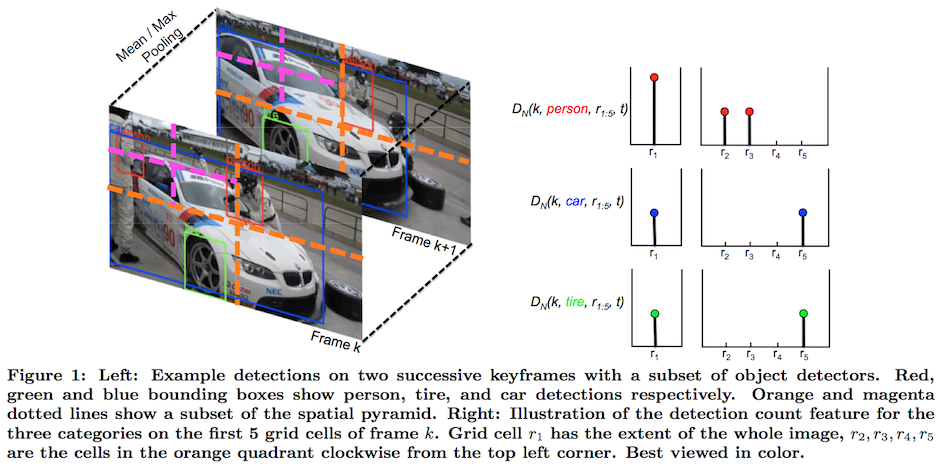

While low-level image features have proven to be effective representations for visual recognition tasks such as object recognition and scene classification, they are inadequate to capture complex semantic meaning required to solve high- level visual tasks such as multimedia event detection and recognition. Recognition or retrieval of events and activi- ties can be improved if specific discriminative objects are detected in a video sequence. In this paper, we propose an image representation, called Detection Bank, based on the detection images from a large number of windowed object detectors where an image is represented by different statis- tics derived from these detections. This representation is extended to video by aggregating the key frame level image representations through mean and max pooling. We em- pirically show that it captures complementary information to state-of-the-art representations such as Spatial Pyramid Matching and Object Bank. These descriptors combined with our Detection Bank representation significantly outper- forms any of the representations alone on TRECVID MED 2011 data.
|  |
Tim Althoff, Hyun Oh Song, Trevor Darrell
Detection Bank: An Object Detection Based Video Representation for Multimedia Event Recognition
ACM Multimedia 2012
pdf